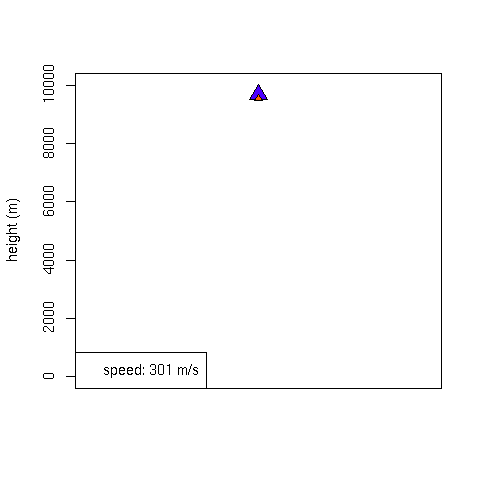

finfer.r
finfer.r is a
R file containing a fuzzy
rule inference engine. The implementation consists of a handful
functions making up around 20 lines of code. The remaining 10 lines or
so are helper function for defining fuzzy sets.

Wow! That must be some expensive software!
Actually, no. It is distributed as free (not as in beer) software
under the
GNU General Public Licence.
Read the licence before using it.
Anything else I should know?
Yes, there are two accompanying files:
- landerdemo.r, a usage demonstration that
contains definitions that in conjunction with the contents of
finfer.r make up a simple fuzzy controller that is used in an animated
simulation landing a planetary lander on planet X. It also uses
finfer-logging.r to analyze the rule base
(here for image).
- finfer-logging.r contains code
to enable logging of rule activations.
The quickest way to try it out is to download all three files, start R,
and then do
> source('landerdemo.r')
> landerdemo()
Compatibility
The code has been tested under R version 2.6.2 under linux and
windows XP. Mac users might have to redefine the test for animation in
landerdemo.r.
Great! Let me have it!
Ok, grab the files from the links above, or go get gzipped tar
archive HERE.
Staal A. Vinterbo
Last modified: Wed Dec 17 17:51:46 EST 2008
{kind=link}